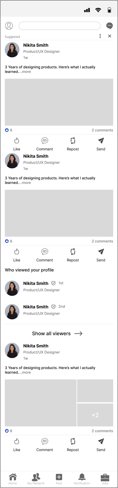
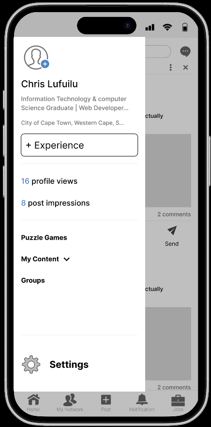
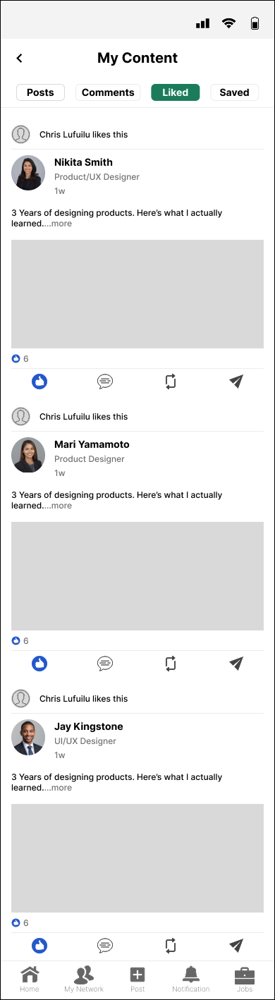
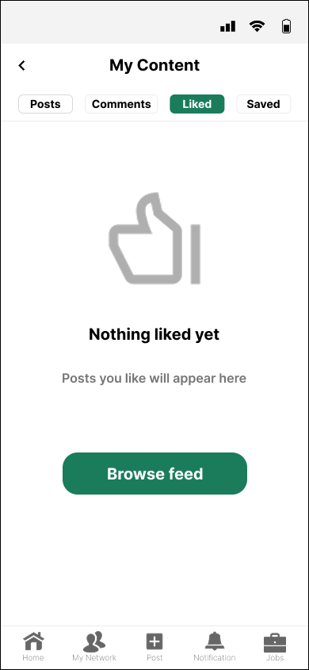
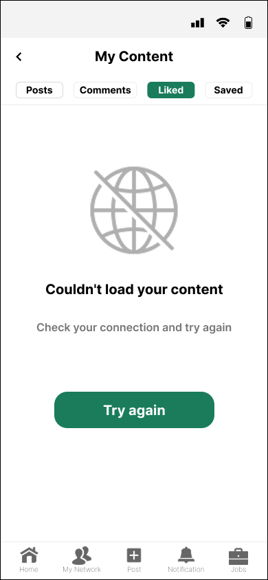

Project Overview
LinkedIn allows users to react to posts but makes retrieving those reactions require 6 separate steps buried deep within profile navigation. This creates a significant gap between what the platform promises and what it actually delivers.
This case study documents a full UX audit and redesign of LinkedIn's liked content retrieval experience, covering empathy research and behavioral analysis through to information architecture, wireframing, usability testing, and strategic business impact assessment.
The Problem
"Young professionals using LinkedIn to build their careers need a way to effortlessly save and retrieve content that supports their growth — because the current experience is so confusing and poorly structured that it signals the platform was never designed with them in mind."
Through personal use and behavioral analysis, I identified that users who cannot quickly retrieve liked content abandon the behavior entirely. This is a silent but significant engagement failure. LinkedIn violates the universal Save & Retrieve mental model established by every major social platform, where liked content is accessible within 1 to 2 taps maximum.
Three cognitive biases compound the problem: Familiarity Bias (users expect a familiar pattern that doesn't exist), Paradox of Choice (6 equally weighted tabs overwhelm users), and the Von Restorff Effect (no visual distinction draws attention to the Reactions tab).
Industry Benchmark
To establish whether LinkedIn's approach represents a design failure or an industry norm, I compared liked content retrieval across major platforms:
| Platform | Steps | Visible on profile? |
|---|---|---|
| Twitter / X | 2 taps | ✓ Yes, immediately |
| 2 taps | ✓ Yes, immediately | |
| TikTok | 2 taps | ✓ Yes, immediately |
| YouTube | 2 taps | ✓ Library → Liked Videos |
| 6 steps | ✗ Hidden behind multiple layers |
LinkedIn requires 3× more steps than every comparable platform. This is not an industry norm — it is a significant outlier.
The Broken Journey
Through direct behavioral observation I mapped the complete flow a user must complete to access content they previously liked:
User Persona
Based on behavioral research, I developed a representative persona for the affected user segment:
- Find liked posts in 1–2 taps
- LinkedIn to feel inclusive
- Platform built for all career stages
- Feel visible to the right people
- Feel like he belongs here
- Move forward in life, not just his job
- 6 steps for a 2-tap task
- Two "All Activity" pages, different content
- Platform feels built for the already-established
- Takes screenshots, never revisits them
- Abandons search after 2–3 steps
- Scrolls past value because retrieval feels pointless
Information Architecture Failures
The LinkedIn liked content failure is fundamentally an IA problem, not a visual design problem. Five structural failures compound to create the broken experience:
No Front Door
Liked content has no entry point from global bottom navigation. Users must already know where to look before they can begin searching.
Duplicate Page Naming
Two pages share the identical label "All Activity" but display completely different content. Users cannot build an accurate mental map of the app.
Wrong Categorisation
Liked content is architecturally separated from Saved content despite users mentally grouping them as the same thing.
No Progressive Disclosure
All content types are presented simultaneously with equal visual weight, giving users no hierarchy to guide their decisions.
Broken Labeling System
"Reactions" does not communicate what the section contains. Plain language like "Posts You Liked" would match the user's mental model immediately.
The Solution — My Content Hub
Based on research findings, the solution works with existing user mental models rather than creating new ones. Liked and saved content is unified under one clearly labelled section called My Content, accessible within 2 taps from home.
- Entry Point 1 — Tap profile picture → Sidebar opens → Tap My Content = 2 taps
- Entry Point 2 — Tap profile picture → Tap profile area → Tap View All → My Content Hub = 3 taps
Wireframe Solution
Mid-fidelity wireframes built in Figma. Each screen communicates structure, hierarchy, and interaction logic across all key screen states.

images/cs1-wf-homefeed.png
images/cs1-wf-sidebar.png
images/cs1-wf-hub.png
images/cs1-wf-empty.png
images/cs1-wf-error.pngUser flow mapping both the happy path and alternate paths including error recovery and empty state handling.
Usability Test Plan
A structured test plan was developed to validate whether the redesign successfully solves the core problem:
- Task completion rate: did the user finish or abandon?
- Time on task: how long from start to completion?
- Error rate: number of wrong taps or incorrect paths before completion
Note: This test plan is structured and ready for execution. User testing sessions will be conducted as participant opportunities become available.
Strategic Business Impact
This redesign was evaluated across three levels of impact — not just as a navigation fix but as a real business decision:
Reduced friction
Liked content retrievable in 2 taps instead of 6 steps. Matches the mental model users already carry from every other platform they use daily.
Improved retention
Reduced churn rate. Re-engagement increases because users who previously abandoned the liked content journey now complete it. This is a measurable product metric LinkedIn would track.
Premium conversion
Users who experience the platform as built for them are more likely to convert to LinkedIn Premium as their careers advance, which directly protects LinkedIn's core subscription revenue stream.
"LinkedIn's liked content retrieval requires 6 steps, which violates the 2-tap mental model established across every major social platform and and drives silent abandonment among emerging professionals. I redesigned the content architecture by introducing a unified My Content hub accessible via 2 entry points, reducing retrieval to a maximum of 3 taps. This directly reduces churn among LinkedIn's fastest-growing user segment and increases the likelihood of Premium conversion as emerging professionals advance in their careers."
What I Learned
IA failures are silent
LinkedIn's problem is not a visual design failure, it is an architecture failure. Users don't complain. They silently abandon. Qualitative research is the only way to surface this.
Convention serves users
The temptation to be original can work against users. The 2-tap pattern exists across every major platform because it works. Following that convention is not laziness. It is respect for the user's mental model.
Design is a business argument
Every UX decision connects to a product metric and every product metric connects to revenue. Being able to articulate that chain from wireframe decision to business outcome is what separates a designer from a decorator.
Read the complete case study
33-page PDF documenting all 6 stages — from empathy research to strategic business case.
Download Case Study PDF